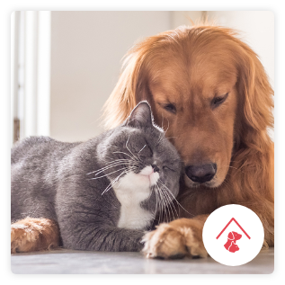
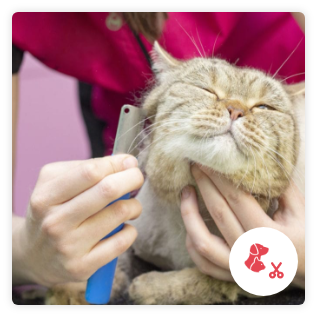
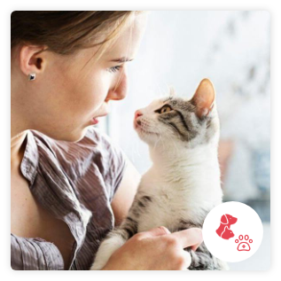

Servicios
Ofrecemos varios servicios para hacer que la estadía de tu mascota sea lo más comfortable y disfrutable, casi como si estuvieran contigo.
Servicios
Ofrecemos varios servicios para hacer que la estadía de tu mascota sea lo más comfortable y disfrutable, casi como si estuvieran contigo.
Hospedaje
Hospedaje
Desde divertidos baños en nuestro lago, a interminables corridas a lo largo de una amplia zona de parque, tres hectáreas de entorno verde y natural proporcionan todo lo necesario para la diversión y el descanso de nuestros huéspedes caninos.
Con habitaciones individuales o grupales para quienes conviven a diario o gustan de la compañía de sus amigos, tenemos todas las comodidades que precisan.
Facilitamos webcams en vivo para que vean a sus mascotas en tiempo real así como fotos y FaceTime para que las puedan visitar cuando lo deseen
Grooming
Grooming
Nuestros estilistas de mascotas capacitados por la academia tienen más de 800 horas de instrucción práctica sobre el cuidado personal que incluye bañar, recortar y peinar perros y gatos de todas las razas y tamaños.
Además poseen una certificación de seguridad que debe ser renovada anualmente. Ofrecemos servicios completos de baño y corte de cabello sin cita previa.
Vacunaciones
Vacunaciones
Nuestros estilistas de mascotas capacitados por la academia tienen más de 800 horas de instrucción práctica sobre el cuidado personal que incluye bañar, recortar y peinar perros y gatos de todas las razas y tamaños.
Además poseen una certificación de seguridad que debe ser renovada anualmente. Ofrecemos servicios completos de baño y corte de cabello sin cita previa.
Adopciones
Adopciones
Adoptar una mascota de refugio puede ser una de las cosas más gratificantes que puedas llegar a hacer.
Por eso brindamos albergue transitorio cuando tenemos espacio y procuramos conectar nuestros visitantes con su nueva familia.
Amamos a las mascotas a nuestro cuidado y queremos asegurarnos de que solo vayan a los mejores hogares.